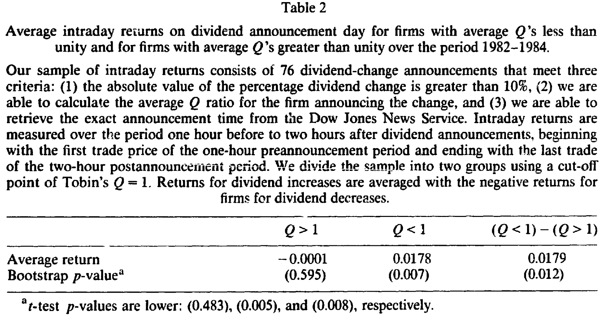
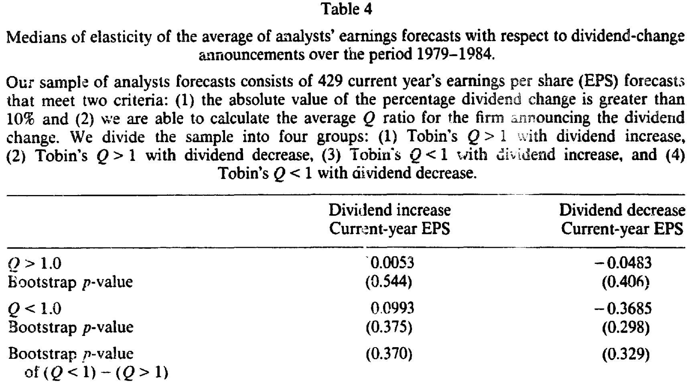
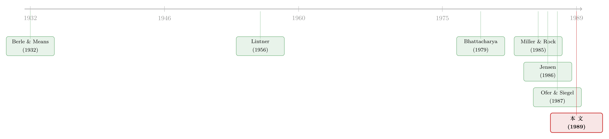

派息上涨，市场到底在为谁鼓掌？
本文读的是 Lang & Litzenberger (1989, Journal of Financial Economics)：同样一则「大幅加派股利」的公告，市场对 Tobin's Q 小于 1 的公司给出的正向反应，是 Q 大于 1 公司的三倍多（日内甚至是后者「几乎为零 vs. 1.78%」的对照）。两位作者用这把横截面的「过度投资标尺」，把纠缠多年的两种解释——现金流信号 vs. 自由现金流——第一次摆上了同一张可证伪的桌子，并把天平推向了后者。
1 一个被讲了三十年、却始终没讲清的故事
先说一个几乎所有人都知道、却很少有人追问到底的经验事实：公司宣布加派股利，股价会涨；宣布减派，股价会跌。
这件事被反复验证过。Fama、Fisher、Jensen 和 Roll (1969) 发现，伴随拆股的加息公司在公告月有显著为正的风险调整收益；Pettit (1972) 把窗口缩到公告前后两天，结论照旧；到了 Aharony 和 Swary (1980)，在控制了同期季度盈余公告之后，正向反应依然稳稳地站在那里。
证据是扎实的。可问题恰恰在这里——「股利公告里到底装着什么信息？」这个问题，从来没真正被回答过。
为什么这么说？因为对「股价为什么涨」这件事，文献里一直并行着两套逻辑严密、却指向完全不同的故事。它们都能解释「加息→涨」，于是谁也说服不了谁。这篇 1989 年的论文，干的就是一件事：找到一个能把这两个故事分开称重的支点。
2 两个都说得通的故事
故事一：现金流信号（cash flow signalling）。
这套逻辑可以一路追到 Lintner (1956) 和 Fama 与 Babiak (1968)——他们发现年度股利和盈余之间存在一种时间序列上的黏性关系：管理层只有在相当确信「更高的派付能维持下去」时，才肯提高股利。于是，如果经理掌握着投资者不知道的、关于未来或当前现金流的私有信息，加派股利就是一个信号：管理层预期现金流会永久性地走高；减派则相反。Bhattacharya (1979)、John 和 Williams (1985)、Miller 和 Rock (1985) 把这套直觉做成了正式的信号模型。
听上去无懈可击。但麻烦也随之而来：Watts (1973) 和 Gonedes (1978) 偏偏找不到股利和后续盈余之间「经济上显著」的关系——当期和过去的股利，预测未来盈余的本事并不比当期和过去的盈余更强。Ofer 和 Siegel (1987) 又反过来说，知道股利公告确实能改进分析师的盈余预测。证据打架。
故事二：自由现金流 / 过度投资（free cash flow / overinvestment）。
这套逻辑的源头更老——Berle 和 Means (1932) 关于所有权与控制权分离的经典论述，被 Jensen (1986) 接续并锐化成了「自由现金流的代理成本」。Jensen 的核心断言是：手握大量自由现金流的公司，有一种接受负净现值项目、把钱投出去的倾向。 如果经理正在过度投资，那么提高股利、把现金「逼」出公司，会减少这种过度投资、抬高公司价值；减派则相反。在 Jensen 看来，「股利公告→股价」的正相关，恰恰是自由现金流假说的证据。（关于 Jensen 这条主线，可参见《现金为什么一定要「还」出去？——四十年后，重读 Jensen 的自由现金流》，以及它在并购语境里的回声《现金多的公司去并购，市场为什么先扣分？》。）
现在，关键的张力浮出水面：这两个故事对「加派→涨」给出完全相同的预测，却来自完全相反的机制。 一个说市场在为「更好的未来现金流」鼓掌，一个说市场在为「老板终于少乱花钱」鼓掌。怎么把它们分开？
3 那把分开两个故事的尺子：Tobin's Q
两位作者的答案，是一个看似朴素、却切中要害的观察：这两个故事，对「哪一类公司」的反应更强，预测是不一样的。
如果一家公司在做价值最大化的投资，它的过度投资问题根本不存在，那么自由现金流假说预测——它的股利公告对股价没有影响。反过来，一家正在过度投资的公司，加派股利才会真正释放价值。于是只要能事先把「过度投资者」从「价值最大化者」里分出来，就能验证自由现金流假说。
用什么分？平均 Tobin's Q 比率。 在「规模扩张型投资 + 资本边际效率递减」的假设下，平均 Q 小于 1 意味着过度投资；价值最大化的公司，平均 Q 会大于 1。
为什么 Q 能扮演这个角色？这正是论文模型一节要交代的事，下面把它一步步拆开。
4 模型：从 MM 的有限增长模型，到一个可证伪的比较静态
作者借用 Modigliani 和 Miller (1966) 的有限增长模型来刻画公司价值 \(V\)：
$$ V = \frac{X}{K} + \frac{P-K}{K}\, I\, T $$
其中 \(X\) 是现有资产的预期盈余，\(K\) 是资本成本，\(P\) 是投资的平均回报率，\(I\) 是当期预期投资水平，\(T\) 是公司有限的增长期。第一项 \(X/K\) 是现有资产对市值的贡献；第二项是未来投资机会的净现值。而 \((P-K)/K\) 这一项，就是公司投资在投出当时的「每一美元净现值」——平均净现值盈利指数。
现金流信号假说在这个框架里说的是什么？它预测加派会传递出更高的现金流或盈余 \(X\)，即
$$ \frac{dV}{dD} = \frac{dX/dD}{K} > 0 $$
而未来投资的净现值被假定不受影响。
自由现金流（过度投资）假说则相反：它认为股利变动改变的不是 \(X\)，而是经理未来投在负净现值项目上的规模。对 \(V\) 关于 \(D\) 求导，得到全文最核心的那个比较静态：
这个方程是整篇论文的枢纽，它把两类公司干净地分了开：
- 对价值最大化的公司：投资被推进到边际净现值盈利指数为零的那一点（边际 Q 等于 1），方括号 $=0$；而且此时投资水平与股利无关，\(dI/dD = 0\)。两头一夹，\(dV/dD = 0\)。股利公告毫无价格冲击。
- 对过度投资的公司：边际 Q 小于 1，投资与股利反向变动，\(dI/dD = -1\)。代入可得 \(dV/dD > 0\)。加派真的能创造价值。
最后一步，是把「不可观测的边际 Q」翻译成「可观测的平均 Q」。把式 (1) 两边同除以当期资本存量 \(C\)：
$$ Q = \frac{R}{K} + \frac{P-K}{K}\cdot\frac{I\,T}{C}, \qquad R = \frac{X}{C} $$
由此得到两条命题：
命题 1：平均 Q 大于 1，是公司处于价值最大化投资水平的必要条件。 命题 2：平均 Q 小于 1，是公司过度投资的充分条件。
证明的关键都在「资本边际效率递减」这一条：\(I(dP/dI)<0\) 意味着平均回报率 \(P\) 始终高于边际回报率 \(P+I(dP/dI)\)。于是 \(Q<1\) 必然推出 \(P 作者很诚实地承认了三个隐患：其一，整套推导建立在「规模扩张型投资」上，投资类型不同则 \(Q<1\) 未必充分；其二，平均 Q 用的是未经审计的重置成本，可能偏离真实经济重置成本；其三，用「平均 Q = 1」做切割，会把一部分边际 Q 小于 1 的过度投资者错划进 Q 大于 1 那一组。但只要投资者感知的边际 Q 与平均 Q 正相关，核心预测就成立：Q 小于 1 的公司，对股利公告的平均反应应当更大。 逻辑搭好了，剩下的是把它钉到数据上。 样本是 1979–1984 年间满足两个条件的股利变动公告：(1) 股利绝对变动超过 10%；(2) 能算出该公司的平均 Q。日收益与公告日期来自 Tobin's Q 的分子（市值）来自 日收益用 Scholes-Williams beta 做风险调整（实际收益减去 beta 乘以等权 这里有一个很漂亮的稳健性设计。日收益里混着太多别的信息，于是作者又找来了日内（intraday）收益作为佐证：1982–1984 年间 76 个能从 第一击，日收益。 Q 大于 1 组的平均反应是 第二击，日内收益。 这一击更干净。如表 2 所示，Q 大于 1 组的日内平均反应是  Table 2 到这里，证据已经和过度投资假说严丝合缝。但真正关键的一步在于：它同样和一个被「条件化」的现金流信号假说兼容。 作者没有就此收兵。他们替对手把故事补全了。 这个补强版叫条件现金流信号假说（conditional cash flow signalling）：假如投资者本来就预期 Q 大于 1 的公司会大幅加息，那加息的「意外成分」很小，价格反应自然就小——这也能解释「Q 大于 1 组反应弱」。在样本里，Q 大于 1 的公司确实是加息（103 个）远多于减息（8 个）。 怎么戳破它？作者抓住了一个不对称性。条件信号假说预测：对 Q 大于 1 的公司，因为减息是「没被预期到」的，减息的价格冲击（绝对值）应当大于加息。而过度投资假说预测的是对称冲击。 把样本切成四组一看（这是论文的表 3）：Q 大于 1 的公司，加息反应 于是还有最后一道封口。 条件信号假说有一个绕不开的硬预测：Q 小于 1 的公司宣布股利变动，会让投资者朝同方向修正现金流预期；而过度投资假说预测——对当期现金流预期毫无影响（因为变的是未来投资，不是当前盈利）。 谁对？去问分析师。作者从 Lynch, Jones, and Ryan 的 如表 4 所示，无论加息减息、无论 Q 大于还是小于 1，这个弹性的中位数统计上都与零无异：Q 大于 1 加息组  Table 4 三道关卡——更大的横截面反应、对称的加减息冲击、零的盈余预测修正——层层叠加，把天平稳稳推向了过度投资假说。 把镜头拉远，这篇论文坐落在一条很清晰的演化线上。 最上游是 Berle 和 Means (1932) 对所有权与控制权分离的洞察——它埋下了「经理未必为股东花钱」的种子。另一条线上，Lintner (1956) 用股利的黏性，开启了「股利携带盈余信息」的整套直觉，并在 Bhattacharya (1979)、Miller 和 Rock (1985) 手里被锻造成正式的信号模型。 两条线长期平行奔跑，直到 Jensen (1986) 把 Berle-Means 的种子接上「自由现金流」，提出过度投资的代理成本，并把「股利公告→股价」的老证据重新解读为自己的弹药。问题是——他无法把自己的解释和现金流信号区分开。Ofer 和 Siegel (1987) 用分析师预测做文章，已经在逼近这个识别难题。  本文 (1989) 的贡献，正是给这条岔路口装上了一个可证伪的支点：用 Tobin's Q 做横截面切割，再用日内收益、四分组对称性、 Q：平均 Q 真能代表「过度投资」吗，会不会只是「成长机会少」的代名词？ 这是最要害的担忧，作者自己也列了三条警告。命题 2 只在「规模扩张型投资 + 边际效率递减」下成立；若一家 Q 小于 1 的公司只是身处衰退行业、投资类型异质，那 Q<1 就不再是过度投资的充分条件。论文靠的是「投资者感知的边际 Q 与平均 Q 正相关」这一较弱假设来撑住结论——可信，但并非铁板一块。 Q：过度投资假说和条件现金流信号，到底差在哪一个可观测点上？ 差在两处。其一是对称性：过度投资预测加息与减息冲击对称，条件信号预测「未被预期的减息」冲击更大。其二是当期盈余预期：条件信号要求分析师同向修正预测，过度投资要求零修正。表 3 与表 4 恰好分别钉死这两点。 Q：把加息收益和减息收益的相反数「平均到一起」，是不是把信息搅浑了？ 在第一组检验里确实会，所以才有第二阶段把四组拆开看。合并是为了提高功效（power），拆开是为了识别机制。作者两步都做了，逻辑上是自洽的。 Q：日内样本只有 76 个、且只覆盖 1982–1984，结论稳吗？ 样本确实小，但日内窗口的好处是几乎隔绝了其他信息的污染，且用 bootstrap 处理了缺失观测。它的角色是「干净但小」的佐证，而非主力证据——和 429 个日样本互为补充。 Q：分析师预测「零修正」会不会只是数据太钝、测不出来？ 有这个风险。作者用中位数弹性来对冲分母接近零的扭曲，但 Q：这篇支持 Jensen，那它和「股利根本没信息」的零假设冲突吗？ 不冲突。它接受「股利有价格反应」这个共识，争的是反应的来源。它把来源从「未来现金流的好消息」改写成「代理成本的减轻」——对当期盈利预期不动，对过度投资者更敏感。 1. 把这把 Q 标尺搬到公司债市场。 【经济故事】加派股利把现金「逼」出公司，对股东是好事，对债权人却可能是财富转移（资产被抽走）。如果 Q 小于 1 的过度投资公司加息真的在减少负 NPV 投资，债权人未必受损甚至受益；但若只是单纯派现，债券利差应当走阔。把股票反应和债券反应放在同一事件窗口里对照，能进一步区分「过度投资减轻」与「单纯抽现」。
【可行性】高。 2. 外资持有人会不会改变这把尺子的读数？ 【经济故事】Jensen 的代理机制依赖于「谁在监督经理」。外资机构持股高的公司，监督更强、过度投资更少，那么对 Q 小于 1 公司加息的「鼓掌」应当更弱（因为问题本就被外部治理压住了）。这能把「治理强度」作为调节变量嵌进 Lang-Litzenberger 框架。
【可行性】中。需要外资持股数据（如 FactSet/13F 跨境部分）与 Q 的交互，内生性需处理（用指数纳入等外生冲击作工具）。 3. 日内高频重做：把 1989 的 76 个样本扩成上万个。 【经济故事】当年日内样本受限于 4. 流动性视角：加派股利如何改变 Q<1 公司的逆向选择？ 【经济故事】如果市场把加息读作「代理成本减轻」，那公告后知情交易与买卖价差的变化，应当在 Q 小于 1 组更明显。把信息含量从「收益」延伸到「流动性」维度，是对本文机制的一个独立侧写。
【可行性】中高。日内价差/深度数据可得，难点是把流动性变化干净地归因到代理机制而非单纯的关注度上升。 5. 用更结构化的方法估计「过度投资的边际 Q」。 【经济故事】本文承认平均 Q 是边际 Q 的嘈杂代理。若用投资欧拉方程或结构投资模型直接估出企业层面的边际 Q，再做同样的切割，可以检验结论对「平均 vs. 边际」之别的稳健性。
【可行性】中。结构估计对数据和设定要求高，但 Compustat 投资序列足够长，是一篇扎实的方法论延伸。 这篇论文最漂亮的地方，不在数据，而在识别的几何。它没有发明新数据，也没有跑更花哨的回归；它做的是把一个看似无法区分的命题——「市场在为现金流鼓掌，还是为治理鼓掌」——通过 Tobin's Q 这把横截面尺子，外加一个对称性预测和一个盈余修正预测，硬生生切成了可证伪的两半。这是 1980 年代 JFE 那种「一个聪明的支点胜过一千个稳健性检验」的范本。 但它的软肋也很清楚。其一，Q<1 是不是过度投资，始终是一个需要信仰「规模扩张 + 边际效率递减」的命题；衰退行业、资产类型异质都能让这把尺子失准。其二，「分析师预测零修正」承担了太重的证明任务，而 我想看到的后续，前面研究方向里已经列了：把这把尺子搬进公司债与流动性维度、用高频大样本重做那条最干净的「Q>1 反应为零」、并让外资与治理强度作为调节变量进场。三十多年过去，「股利里装着什么」这个问题并没有真正关闭——Lang 和 Litzenberger 留下的，是一个至今仍然好用的切割工具。5 数据与识别
CRSP 日收益文件与主文件，剔除公告前一季度有过拆股的股票，以及金融机构与公用事业。最终样本是 429 个股利变动公告。CRSP（股价与股数）、Moody's Bond Record（长期债价格）；分母（资产重置成本）来自哥伦比亚大学编辑的 FASB 第 33 号规定磁带（1979–1984 的净厂房设备与存货重置成本）。CRSP 指数收益）。检验时，把「加息超过 10%」的收益，与「减息超过 10%」收益的相反数平均到一起。Dow Jones News Service 取到精确公告分钟的样本，价格数据来自 Fitch 磁带，窗口是公告前一小时到公告后两小时。由于日内数据天然的缺失观测问题，显著性用 Barclay 和 Litzenberger (1988) 开发的 bootstrap 算法来定。6 主要结果：天平向哪边倾斜
0.003，Q 小于 1 组是 0.011，后者是前者的三倍多，差值 0.008，在 1% 水平显著（p 值 0.000）。-0.0001，bootstrap p 值高达 0.595——统计上完全为零；而 Q 小于 1 组是 0.0178，p 值 0.007，差值 0.0179（p 值 0.012）。换句话说，大幅股利变动对 Q 小于 1 公司的股价有显著冲击，对 Q 大于 1 公司则毫无影响。 这正是模型里 \(dV/dD = 0\) 那条预测的精确画像。7 反转：把对手逼到墙角
0.003（p=0.016，显著），减息反应 -0.003（p=0.371，不显著）——但两者绝对值相近、且彼此没有显著差异。这与「减息冲击应更大」的条件信号预测不符。而 Q 小于 1 的公司，加息 0.008、减息 -0.027，两边都高度显著，且在加息和减息两种情形下，Q 小于 1 组的绝对反应都在 5% 水平上显著大于 Q 大于 1 组。尤其在减息这一侧，这个更大的冲击直接和条件信号假说打架。I/B/E/S 数据库取出公告前后的当年每股盈余预测，用「分析师盈余预测平均值相对股利变动的弹性的中位数」来度量（用中位数而非均值，是为了避免预测均值接近零时，分母极小制造出的极端百分比扭曲）。0.0053（p=0.544）、减息组 -0.0483（p=0.406）；Q 小于 1 加息组 0.0993（p=0.375）、减息组 -0.3685（p=0.298）。股利公告没有引起分析师对当期盈余预测的修正。 这与条件现金流信号假说的核心预测正面冲突，却与过度投资假说「不动当期现金流预期」的预测完全一致。8 文献脉络
I/B/E/S 盈余修正三重证据互相加固。它不是又一篇「股利有信息」的论文，而是第一篇把「哪一种信息」逼到可检验地步的论文。9 评论与延伸（Q&A + 研究方向）
(a) 几个可能的疑问
I/B/E/S 月度快照的时点本身不精确（不知道一个月里哪天调查的）。把「测不出修正」当作「没有修正」，是这篇论文识别链上最软的一环。
(b) 几个可能的研究问题与提案
TRACE 公司债成交 + CRSP/Compustat 算 Q，事件研究即可，识别清晰。
Fitch 磁带和人工取分钟。今天用毫秒级 TAQ 与机器解析的新闻时间戳，可以把「Q 大于 1 公司反应为零」这条最干净的预测，在大样本上重新检验，并看它是否随被动持股上升而衰减。
【可行性】高。TAQ + RavenPack/Bloomberg 时间戳 + Compustat，纯技术活，doable。
10 我的判断
I/B/E/S 月度数据的时点模糊，使「测不出」与「不存在」难以分辨。其三，样本只有 429 个、跨 1979–1984 六年，且重置成本数据来自单一磁带，外推到今天的低利率、高被动持股环境，结论未必照搬。参考文献